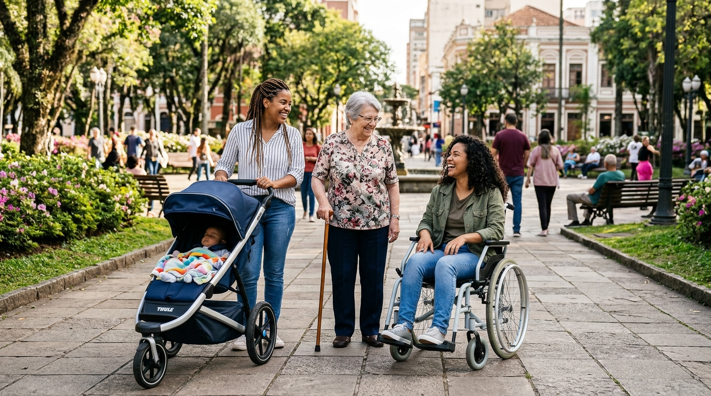

Acessibilidade é o que permite que todos participem
Entrar em casa, atravessar a rua, estudar, trabalhar, usar o celular. Para muita gente, cada uma dessas tarefas depende de um ambiente pensado para todos. Este guia explica o que é acessibilidade e mostra como ela aparece na vida de todo dia.

Acessibilidade em números
Segundo o Censo 2022 do Instituto Brasileiro de Geografia e Estatística (IBGE), o Brasil tinha mais de 14 milhões de pessoas com deficiência entre quem tem 2 anos ou mais.
- 14,4 milhõesde pessoas com deficiência no Brasil (7,3% da população)
- 7,9 milhõescom dificuldade permanente de enxergar, mesmo usando óculos ou lentes
- 45,4%das pessoas com deficiência tinham 60 anos ou mais
O que é acessibilidade
Acessibilidade é a possibilidade de uma pessoa usar espaços, produtos, serviços, informações e tecnologias com segurança e autonomia. A Lei Brasileira de Inclusão (Lei nº 13.146/2015) trata a acessibilidade como um direito, e não como um favor.
Quando um lugar não é acessível, quem sofre não é a pessoa que tem a deficiência, e sim quem encontra uma barreira no caminho: um degrau sem rampa, um vídeo sem legenda, um site que o leitor de tela não consegue ler.
Quem se beneficia
Acessibilidade ajuda pessoas com deficiência, mas não só elas. Também se beneficiam:
- pessoas idosas, que podem ter dificuldade para andar, enxergar ou ouvir;
- gestantes e pessoas que empurram carrinhos de bebê;
- quem está com o braço ou a perna engessados, ou se recuperando de uma cirurgia;
- pessoas com mobilidade reduzida por qualquer motivo, como quem carrega malas ou compras pesadas;
- quem está em um ambiente barulhento, escuro ou com muito reflexo na tela.
Os tipos de barreira
A Lei Brasileira de Inclusão define barreira como qualquer obstáculo que limita a participação de uma pessoa na sociedade. Ela separa as barreiras em seis tipos:
- Urbanísticas: calçadas quebradas, falta de rampas e de piso tátil nas vias públicas.
- Arquitetônicas: degraus, portas estreitas e banheiros sem adaptação em prédios.
- Nos transportes: ônibus sem elevador, estações sem acesso para cadeira de rodas.
- Na comunicação e na informação: falta de Língua Brasileira de Sinais (Libras), braille, legendas e linguagem simples.
- Atitudinais: preconceito e comportamentos que excluem, como tratar a pessoa como incapaz.
- Tecnológicas: sites, aplicativos e equipamentos que nem todos conseguem usar.
Desenho universal
O desenho universal é a ideia de criar ambientes, objetos e serviços que possam ser usados por todas as pessoas, sem precisar de adaptação depois. Ele é mais barato do que reformar mais tarde e evita que alguém seja tratado como exceção.
Os sete princípios do desenho universal são:
- Uso equitativo: serve a pessoas com habilidades diferentes.
- Flexibilidade de uso: aceita várias preferências e formas de usar.
- Uso simples e intuitivo: fácil de entender, mesmo para quem usa pela primeira vez.
- Informação perceptível: a informação chega por mais de um meio, como texto, som e imagem.
- Tolerância ao erro: reduz riscos e consequências de ações acidentais.
- Baixo esforço físico: pode ser usado com conforto e pouca fadiga.
- Tamanho e espaço adequados para aproximação e uso, seja a pessoa alta, baixa ou use cadeira de rodas.
Explore o guia
Em casa
Portas, banheiro, cozinha, iluminação e pequenas adaptações.
Na rua
Calçadas, piso tátil, travessias, transporte e vagas.
Escola e trabalho
Educação inclusiva, Libras, cotas e adaptações.
Internet
Celular, leitor de tela, legendas e sites acessíveis.
Direitos
As principais leis e onde buscar ajuda.
Este site também foi construído para ser acessível. No topo de cada página você pode aumentar a letra e ativar o alto contraste, e o VLibras, tradutor de textos para Libras, aparece no canto da tela.